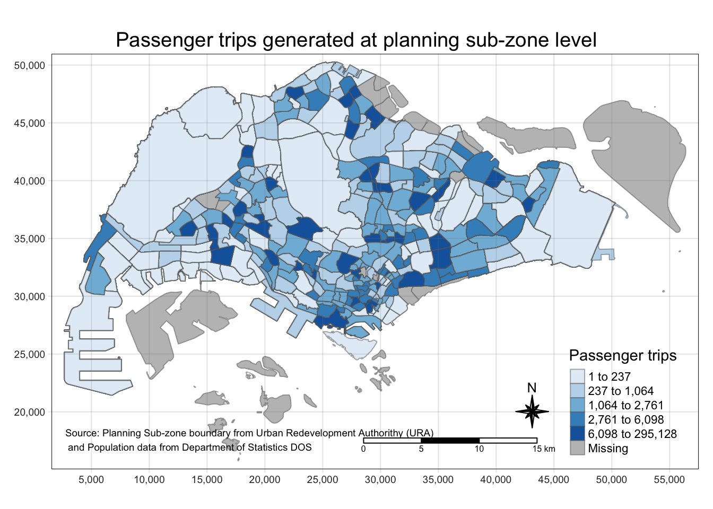

pacman::p_load(tmap, sf, tidyverse, knitr)In-class Exercise 1: First Date with Geospatial Data Analytics
Getting Started
the code chunk below load the following packages:
tmap: thematic mapping.
sf: for geospatial data handling.
tidyverse: for non-spatial data handling.
Importing Data
Importing OD data
import data of Passenger Volume by Origin Destination Bus Stop dataset from LTA Data Mall utilising read_csv() of readr package.
odbus = read_csv("data/aspatial/origin_destination_bus_202308.csv")Rows: 5709512 Columns: 7
── Column specification ────────────────────────────────────────────────────────
Delimiter: ","
chr (5): YEAR_MONTH, DAY_TYPE, PT_TYPE, ORIGIN_PT_CODE, DESTINATION_PT_CODE
dbl (2): TIME_PER_HOUR, TOTAL_TRIPS
ℹ Use `spec()` to retrieve the full column specification for this data.
ℹ Specify the column types or set `show_col_types = FALSE` to quiet this message.glimpse(odbus)Rows: 5,709,512
Columns: 7
$ YEAR_MONTH <chr> "2023-08", "2023-08", "2023-08", "2023-08", "2023-…
$ DAY_TYPE <chr> "WEEKDAY", "WEEKENDS/HOLIDAY", "WEEKENDS/HOLIDAY",…
$ TIME_PER_HOUR <dbl> 16, 16, 14, 14, 17, 17, 17, 17, 7, 17, 14, 10, 10,…
$ PT_TYPE <chr> "BUS", "BUS", "BUS", "BUS", "BUS", "BUS", "BUS", "…
$ ORIGIN_PT_CODE <chr> "04168", "04168", "80119", "80119", "44069", "4406…
$ DESTINATION_PT_CODE <chr> "10051", "10051", "90079", "90079", "17229", "1722…
$ TOTAL_TRIPS <dbl> 7, 2, 3, 10, 5, 4, 3, 22, 3, 3, 7, 1, 3, 1, 3, 1, …changing origin and destination pt code from CHR to Factor
odbus$ORIGIN_PT_CODE <- as.factor(odbus$ORIGIN_PT_CODE)
odbus$DESTINATION_PT_CODE <- as.factor(odbus$DESTINATION_PT_CODE)glimpse(odbus)Rows: 5,709,512
Columns: 7
$ YEAR_MONTH <chr> "2023-08", "2023-08", "2023-08", "2023-08", "2023-…
$ DAY_TYPE <chr> "WEEKDAY", "WEEKENDS/HOLIDAY", "WEEKENDS/HOLIDAY",…
$ TIME_PER_HOUR <dbl> 16, 16, 14, 14, 17, 17, 17, 17, 7, 17, 14, 10, 10,…
$ PT_TYPE <chr> "BUS", "BUS", "BUS", "BUS", "BUS", "BUS", "BUS", "…
$ ORIGIN_PT_CODE <fct> 04168, 04168, 80119, 80119, 44069, 44069, 20281, 2…
$ DESTINATION_PT_CODE <fct> 10051, 10051, 90079, 90079, 17229, 17229, 20141, 2…
$ TOTAL_TRIPS <dbl> 7, 2, 3, 10, 5, 4, 3, 22, 3, 3, 7, 1, 3, 1, 3, 1, …picking data from 7 to 9 and in weekday
origin7_9 <- odbus %>%
filter(DAY_TYPE == "WEEKDAY") %>%
filter(TIME_PER_HOUR >= 7 &
TIME_PER_HOUR <= 9) %>%
group_by(ORIGIN_PT_CODE) %>%
summarise(TRIPS = sum(TOTAL_TRIPS))kable(head(origin7_9))| ORIGIN_PT_CODE | TRIPS |
|---|---|
| 01012 | 1617 |
| 01013 | 813 |
| 01019 | 1620 |
| 01029 | 2383 |
| 01039 | 2727 |
| 01059 | 1415 |
write_rds(origin7_9, "data/rds/origin7_9.rds")origin7_9 <- read_rds("data/rds/origin7_9.rds")Importing geospatial data
bus stop
busstop <- st_read(dsn = "data/geospatial",
layer = "BusStop") %>%
st_transform(crs = 3414)Reading layer `BusStop' from data source
`/Users/michaelberlian/Desktop/SMU Nov/ISSS624 GeoSpatial/ISSS624/In-class_Ex/In-class_Ex1/data/geospatial'
using driver `ESRI Shapefile'
Simple feature collection with 5161 features and 3 fields
Geometry type: POINT
Dimension: XY
Bounding box: xmin: 3970.122 ymin: 26482.1 xmax: 48284.56 ymax: 52983.82
Projected CRS: SVY21glimpse(busstop)Rows: 5,161
Columns: 4
$ BUS_STOP_N <chr> "22069", "32071", "44331", "96081", "11561", "66191", "2338…
$ BUS_ROOF_N <chr> "B06", "B23", "B01", "B05", "B05", "B03", "B02A", "B02", "B…
$ LOC_DESC <chr> "OPP CEVA LOGISTICS", "AFT TRACK 13", "BLK 239", "GRACE IND…
$ geometry <POINT [m]> POINT (13576.31 32883.65), POINT (13228.59 44206.38),…mpsz <- st_read(dsn = "data/geospatial",
layer = "MPSZ-2019") %>%
st_transform(crs = 3414)Reading layer `MPSZ-2019' from data source
`/Users/michaelberlian/Desktop/SMU Nov/ISSS624 GeoSpatial/ISSS624/In-class_Ex/In-class_Ex1/data/geospatial'
using driver `ESRI Shapefile'
Simple feature collection with 332 features and 6 fields
Geometry type: MULTIPOLYGON
Dimension: XY
Bounding box: xmin: 103.6057 ymin: 1.158699 xmax: 104.0885 ymax: 1.470775
Geodetic CRS: WGS 84mpszSimple feature collection with 332 features and 6 fields
Geometry type: MULTIPOLYGON
Dimension: XY
Bounding box: xmin: 2667.538 ymin: 15748.72 xmax: 56396.44 ymax: 50256.33
Projected CRS: SVY21 / Singapore TM
First 10 features:
SUBZONE_N SUBZONE_C PLN_AREA_N PLN_AREA_C REGION_N
1 MARINA EAST MESZ01 MARINA EAST ME CENTRAL REGION
2 INSTITUTION HILL RVSZ05 RIVER VALLEY RV CENTRAL REGION
3 ROBERTSON QUAY SRSZ01 SINGAPORE RIVER SR CENTRAL REGION
4 JURONG ISLAND AND BUKOM WISZ01 WESTERN ISLANDS WI WEST REGION
5 FORT CANNING MUSZ02 MUSEUM MU CENTRAL REGION
6 MARINA EAST (MP) MPSZ05 MARINE PARADE MP CENTRAL REGION
7 SUDONG WISZ03 WESTERN ISLANDS WI WEST REGION
8 SEMAKAU WISZ02 WESTERN ISLANDS WI WEST REGION
9 SOUTHERN GROUP SISZ02 SOUTHERN ISLANDS SI CENTRAL REGION
10 SENTOSA SISZ01 SOUTHERN ISLANDS SI CENTRAL REGION
REGION_C geometry
1 CR MULTIPOLYGON (((33222.98 29...
2 CR MULTIPOLYGON (((28481.45 30...
3 CR MULTIPOLYGON (((28087.34 30...
4 WR MULTIPOLYGON (((14557.7 304...
5 CR MULTIPOLYGON (((29542.53 31...
6 CR MULTIPOLYGON (((35279.55 30...
7 WR MULTIPOLYGON (((15772.59 21...
8 WR MULTIPOLYGON (((19843.41 21...
9 CR MULTIPOLYGON (((30870.53 22...
10 CR MULTIPOLYGON (((26879.04 26...glimpse(mpsz)Rows: 332
Columns: 7
$ SUBZONE_N <chr> "MARINA EAST", "INSTITUTION HILL", "ROBERTSON QUAY", "JURON…
$ SUBZONE_C <chr> "MESZ01", "RVSZ05", "SRSZ01", "WISZ01", "MUSZ02", "MPSZ05",…
$ PLN_AREA_N <chr> "MARINA EAST", "RIVER VALLEY", "SINGAPORE RIVER", "WESTERN …
$ PLN_AREA_C <chr> "ME", "RV", "SR", "WI", "MU", "MP", "WI", "WI", "SI", "SI",…
$ REGION_N <chr> "CENTRAL REGION", "CENTRAL REGION", "CENTRAL REGION", "WEST…
$ REGION_C <chr> "CR", "CR", "CR", "WR", "CR", "CR", "WR", "WR", "CR", "CR",…
$ geometry <MULTIPOLYGON [m]> MULTIPOLYGON (((33222.98 29..., MULTIPOLYGON (…Geospatial data wrangling
Combining Busstop and mpsz
busstop_mpsz <- st_intersection(busstop, mpsz) %>%
select(BUS_STOP_N, SUBZONE_C) %>%
st_drop_geometry()Warning: attribute variables are assumed to be spatially constant throughout
all geometrieswrite_rds(busstop_mpsz, "data/rds/busstop_mpsz.csv") origin_data <- left_join(origin7_9 , busstop_mpsz,
by = c("ORIGIN_PT_CODE" = "BUS_STOP_N")) %>%
rename(ORIGIN_BS = ORIGIN_PT_CODE,
ORIGIN_SZ = SUBZONE_C)duplicate <- origin_data %>%
group_by_all() %>%
filter(n()>1) %>%
ungroup()origin_data <- unique(origin_data)mpsz_origtrip <- left_join(mpsz,
origin_data,
by = c("SUBZONE_C" = "ORIGIN_SZ"))tm_shape(mpsz_origtrip)+
tm_fill("TRIPS",
style = "quantile",
palette = "Blues",
title = "Passenger trips") +
tm_layout(main.title = "Passenger trips generated at planning sub-zone level",
main.title.position = "center",
main.title.size = 1.2,
legend.height = 0.45,
legend.width = 0.35,
frame = TRUE) +
tm_borders(alpha = 0.5) +
tm_compass(type="8star", size = 2) +
tm_scale_bar() +
tm_grid(alpha =0.2) +
tm_credits("Source: Planning Sub-zone boundary from Urban Redevelopment Authorithy (URA)\n and Population data from Department of Statistics DOS",
position = c("left", "bottom"))